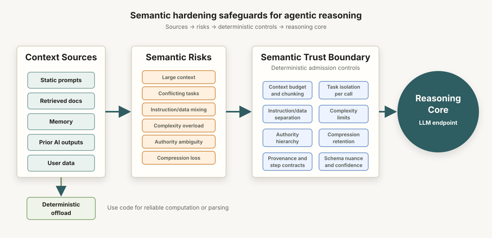

Semantic Controls to Harden Agentic Reasoning

Hardening What Against Whom?
Information security traditionally guards against internal and external actors accessing data or other resources without authorization. Traditional approaches involve: limiting access, restricting permissions, and tightly controlling how identity is determined. Implicit in this model is the notion that internal and external actors can act arbitrarily and so steps must be taken to secure systems against the (large) subset of those arbitrary actions that might be unwanted, dangerous, malicious, etc.
But what happens when the discretionary “actor” is now a core component of the system itself? Previously, systems consisted entirely of “deterministic” code that could theoretically be constrained with precision. Now, with agentic systems, a probabilistic reasoning “actor” (AI, an LLM model endpoint) is the beating heart of the system itself. Under this paradigm, this core AI system component may attempt to invoke tools when it should not, generate inaccurate or made-up information, or generate data in a format not contemplated by the system. Although these unwanted system behaviors may occasionally be the result of malicious actors, they are, more often than not, simply caused by a particular set of non-malicious AI inputs having unintended and unwanted AI outputs.
The risk of system unreliability, interestingly, has caused a governance dead zone. Because, if no traditional security boundary has been broken (authentication, read-write permissions, etc.) is a reliability failure (i.e., an unwanted AI output) even InfoSec’s responsibility? Maybe “yes” for bad tool invocation, but “no” for “wrong” answers? At present, these questions do not have agreed up answers.
Context Uncontrolled
In any event, irrespective of where responsibility ultimately may lie, the bigger problem is that developers generally do not treat AI inputs or “context” as a governed boundary or threshold. “Context” includes those things that enter the reasoning space of an agent (i.e., are transmitted to an AI/LLM endpoint). For example, “context” may include retrieved documents, static prompts, memory, outputs from prior AI calls, dynamic prompts, and prompt assembly materials.
The contours of the problem, however, also help us draw the blueprint for the solution. A number of context variables which cause unwanted AI outputs have been identified and studied in details through the collective efforts of university researchers, the frontier LLM labs, and various AI security vendors. These context variables include, among other things: the length of admitted context, the number of tasks given to the LLM, the nature of the tasks given to the LLM (e.g., whether those tasks are conflicting), the extent to which data and instructions are deeply commingled, and the overall complexity of the materials that comprise the AI inputs. ALL of these “semantic trust boundaries” can be controlled, shaped, and inspected using deterministic code that is added to an agentic software harness.
For AI agents, the answer to the question “Securing What Against Whom” means securing the core reasoning function of the agent (the AI/LLM model endpoint) against the various types of context generated by the system (or provided by the user) that trigger the failure modes noted above. Stated differently, the reasoning area of the AI agent is sacred ground and highly consequential, and so admission to it should be strictly governed and gated.
Context Controlled
Below are some of the problematic context variables, together with some helpful Chengyu, and ideas for potential ways to treat problematic context dimension a governed trust boundaries.
Large Context
Needle in a haystack... but the haystack talks.
Problem: If admitted context is within the context window of
the model endpoint, it can still be too big for the AI endpoint to
successfully reason across. Although it is often convenient for
developers to
“send all the context at once,” large admitted context can cause LLM
endpoints to lose focus, miss key facts, or become confused.
Controls: It is useful to use deterministic code to enforce a strict upper limit to context size and to break apart those processing pieces that can be done separately. If the larger picture is needed for the processing, there are often ways to provide the AI endpoint with a dramatically smaller problem statement or map, rather than all possible context.
Conflicting Task Modes
Too many hats, but only one head.
Problem: LLMs, like humans, do not do their best work when given competing task modes in the same assignment. “Make it big, but also make it small. Make it complex, but it also must be simple.”
Controls: In the agentic orchestrator, or any other module that is allowed to call LLM endpoints, one can, and should, use deterministic code to limit each LLM endpoint call to as few tasks as possible, in while still achieving the processing goals. For example, for a system that does ideation, research, and writing, each of those tasks are probably best suited as either separate AI calls, or possibly entire separate workflows. This approach to structure is a control that can live as deterministic code within the agent and as part of agent architecture.
Deep Co-mingling of Instructions and Data
Everything is soup.
Problem: One of the inescapable issues with LLM-powered agents is that, at some level, instructions and data musts be combined. However, that doesn’t mean they need to be deeply intertwined like Spaghetti. In fact, the spaghetti approach is likely to confuse the LLM endpoint so that data ends up being treated as instructions and instructions as data. The more context resembles spaghetti, the more injectable that context is.
Controls: Code modules that are allowed to assemble context should uniformly ensure that there is a clean separation between instructions and data (a typical approach is to have instructions at the beginning, followed by data), and that both are clearly labeled. This of course doesn’t guarantee that the LLM endpoint will keep them straight, but it will lower the incidence of instruction-data confusion. This is a control that is instantiated with deterministic code.
Overall Complexity
The map becomes the maze.
Problem: Complex context is more likely to confuse LLMs. Although there is some overlap between this variable and some others (such as context length and conflicting task modes), it still deserves independent status because some types of complexity are not otherwise caught. For example, context that involves many different data types or multiple data structures may confuse the LLM.
Controls: Again, managing complexity is primarily a feature of architecture and ensuring that modules are carefully structured to control the number of data types and data structures that are sent to LLM endpoints.
Authority Ambiguity
Who’s in charge?
Problem: Many times context will lack a clear hierarchy for resolving in-context authority conflicts. For example, within a single piece of admitted context may live system prompts, user instructions, dynamically created prompts, and examples, but no statement about which is authoritative over the others, for purposes of reasoning.
Controls: Modules that execute prompt assembly should include clear instructions, including hierarchies of authority, labeling, and precedence where relevant.
Compression Loss
The summary ate the caveats.
Problem: In order to keep context within model ceilings, many agent harnesses will use compression: summaries or distillations of prior materials, memory, conversations, or documents. The problem arises when compression loses critical instructions that establish hierarchy of authority, reasoning rules, or limitations on scope.
Controls: The solution is to ensure authoritative material, instructions, and limitations are assigned a retention status that is deterministically preserved (don’t rely on the AI to do it) in the event of compression.
Semantic Drift Across Steps
Whisper down the alley... but with tokens and at scale.
Problem: In a multi-step workflow that carries over inputs and outputs across separate calls to the LLM endpoint may cause semantic boundaries to blur. The tentative becomes certain. Description becomes prescription. Or, a narrow task becomes a broad mandate.
Controls: The system should preserve provenance and use “step contracts” for each turn of the workflow, so explicit instruction grounding the AI (“summarize only”, “do not classify”, or “extract claims but do not make your own conclusions.”)
Schema Overconfidence
The JSON made me do it...
Problem: JSON schema semantics (e.g. {“risk”: “high”}) may obscure, or up-promote, or down-promote findings. Tentative AI responses might be lost in coarse or binary JSON categories.
Controls: JSON is indispensable in agentic development, but care should be taken in crafting schemas so that classification does not end up distorting model ouputs.
Using AI When Deterministic Code is Reliable
Hiring a poet to count beans.
Problem: Because LLMs are so highly performant and are generally able to carry out a wide variety of quantitative and qualitative analysis, it is tempting to rely on LLMs for such work. However, even a 1% failure rate, in a sensitive use-case (healthcare, financial services, accounting) can be catastrophic.
Controls: If the work to be done involves computation or other qualitative work/analysis and can be done with essentially 100% reliability by deterministic code (outputs not generated by an AI) then it is much better to take that work “off the plate” of the LLM and have it scoped to be completed by deterministic code. This not only increases the reliability of that particular work, but will also decrease the token burn rate of the system.
Conclusion: A Beginning
Although hardening the trust boundaries around admitted context is essential, is is likely far from sufficient, especially for sensitive use-cases. Other trust boundaries in agentic systems include the point at where the System ingests AI outputs. Here the approach works in reverse: just as the reasoning space (the LLM endpoint) is highly protected space in an agentic system, so is the rest of the agentic system as against AI outputs. AI outputs need to be evaluated for proper semantics, syntax, and safety.
It is also important to separate the controls that guard the trust boundary from the observational tools that evaluate the effectiveness of those controls. Trust boundary controls are not perfect and are generally subject to improvement. Observational tools help to detect when controls fail as well as provide ideas for improvement.
Trust boundaries for AI outputs and observational posts will be the subject of separate posts.
Useful Resources
Context performance, context rot, and reasoning degradation
Anthropic. (n.d.). Reduce hallucinations. Claude Platform Documentation. Accessed June 30, 2026. (platform.claude.com)
Anthropic Applied AI Team. (September 29, 2025). Effective context engineering for AI agents. Anthropic Engineering. (anthropic.com)
Hong, Kelly; Troynikov, Anton; & Huber, Jeff. (July 14, 2025). Context Rot: How Increasing Input Tokens Impacts LLM Performance. Chroma Research. (trychroma.com)
Laban, Philippe; Hayashi, Hiroaki; Zhou, Yingbo; & Neville, Jennifer. (May 9, 2025). LLMs get lost in multi-turn conversation. arXiv. (arxiv.org)
Li, Zihao; Yi, Weiwei; & Chen, Jiahong. (July 2026). Accuracy paradox: Addressing epistemic, manipulative, and societal risks of hallucination in AI governance. Computer Law & Security Review, 61, Article 106311. (sciencedirect.com)
OpenAI. (September 5, 2025). Why language models hallucinate. OpenAI Research. (openai.com)
Tam, Zhi Rui; Wu, Cheng-Kuang; Tsai, Yi-Lin; Lin, Chieh-Yen; Lee, Hung-yi; & Chen, Yun-Nung. (2024). Let Me Speak Freely? A study on the impact of format restrictions on large language model performance. Proceedings of the 2024 Conference on Empirical Methods in Natural Language Processing: Industry Track, 1218–1236. (aclanthology.org)
OpenAI. (December 18, 2025). Model Spec. OpenAI. (model-spec.openai.com)
Prompt injection, instruction/data confusion, and adversarial context
Liu, Yupei; Jia, Yuqi; Geng, Runpeng; Jia, Jinyuan; & Gong, Neil Zhenqiang. (2024). Formalizing and benchmarking prompt injection attacks and defenses. Proceedings of the 33rd USENIX Security Symposium, 1831–1847. (pure.psu.edu)
Schulhoff, Sander, et al. (June 6, 2024). The Prompt Report: A systematic survey of prompting techniques. arXiv. (arxiv.org)
Shen, Xinyue; Chen, Zeyuan; Backes, Michael; Shen, Yun; & Zhang, Yang. (2024). “Do Anything Now”: Characterizing and evaluating in-the-wild jailbreak prompts on large language models. Proceedings of the ACM Conference on Computer and Communications Security. (dl.acm.org)
OWASP AI, LLM, and agentic-system security sources
OWASP Foundation. (November 18, 2024). OWASP Top 10 for LLM Applications 2025. OWASP GenAI Security Project. (owasp.org)
OWASP GenAI Security Project. (2025). LLM01:2025 Prompt Injection. OWASP. (genai.owasp.org)
OWASP GenAI Security Project. (2025). LLM05:2025 Improper Output Handling. OWASP. (genai.owasp.org)
OWASP GenAI Security Project. (2025). LLM09:2025 Misinformation. OWASP. (genai.owasp.org)
OWASP GenAI Security Project. (February 17, 2025). Agentic AI — Threats and Mitigations. OWASP. (genai.owasp.org)
OWASP GenAI Security Project. (April 23, 2025). Multi-Agentic System Threat Modeling Guide v1.0. OWASP. (genai.owasp.org)
OWASP GenAI Security Project. (July 27, 2025). Securing Agentic Applications Guide 1.0. OWASP. (genai.owasp.org)
NIST, government, and standards sources for AI trust boundaries and governance
Autio, C.; Schwartz, R.; Eikermann, M.; Gregory, R.; & others. (July 26, 2024). Artificial Intelligence Risk Management Framework: Generative Artificial Intelligence Profile. NIST AI 600-1. National Institute of Standards and Technology. (nist.gov)
Tabassi, Elham, et al. (January 26, 2023). Artificial Intelligence Risk Management Framework (AI RMF 1.0). NIST AI 100-1. National Institute of Standards and Technology. (nist.gov)
Other useful trust-boundary, containment, and AI-system governance sources
Anthropic. (May 25, 2026). How we contain Claude across products. Anthropic Engineering. (anthropic.com)
Cloud Security Alliance. (February 6, 2025). Agentic AI Threat Modeling Framework: MAESTRO. Cloud Security Alliance. (cloudsecurityalliance.org)
MITRE. (n.d.). MITRE ATLAS™: Adversarial Threat Landscape for Artificial-Intelligence Systems. MITRE. Accessed July 6, 2026. (atlas.mitre.org)